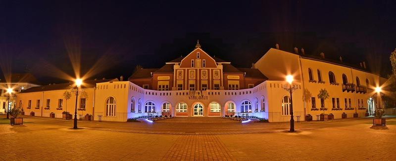
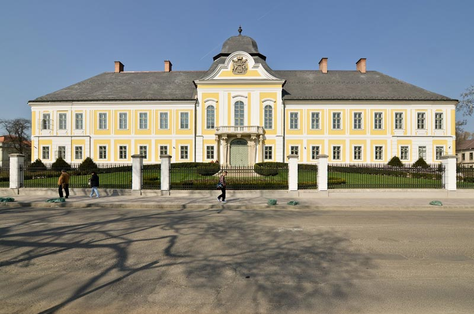
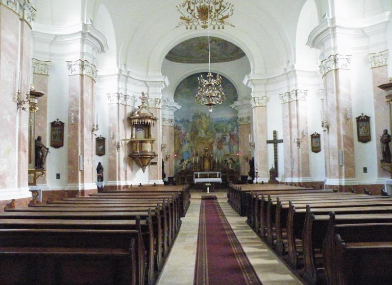
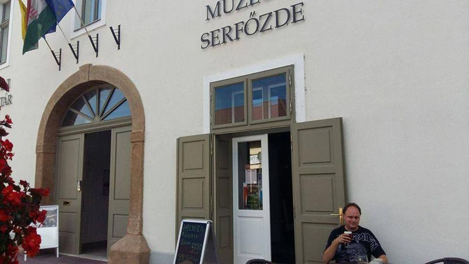
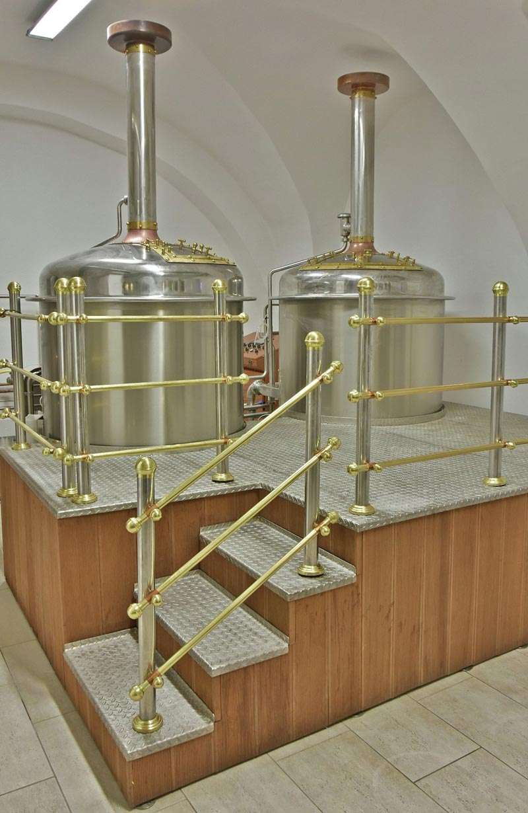
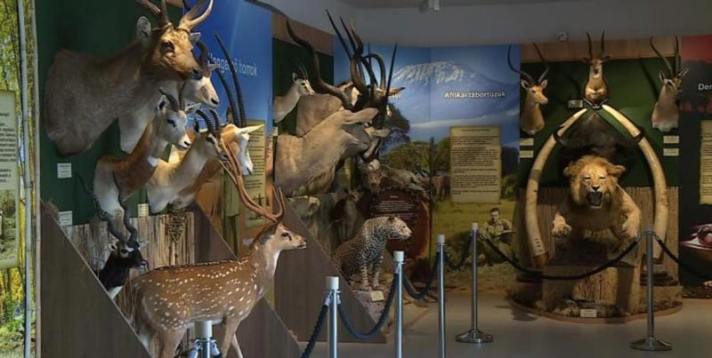
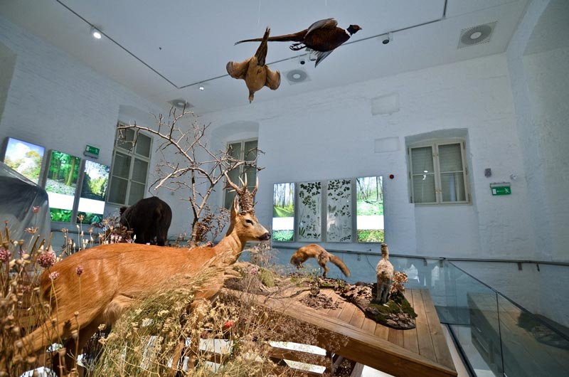
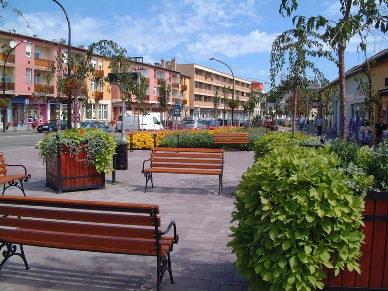
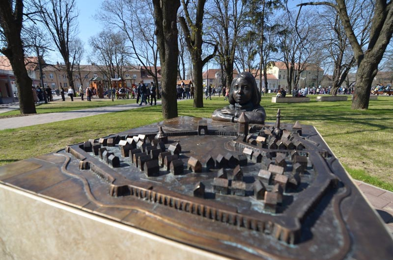

【美景】
豪特万历史可以追溯到新石器时代。 豪特万的啤酒厂博物馆骄傲之一是有价值的收藏品。 豪特万的塞切尼狩猎博物馆中欧唯一的狩猎博物馆。 豪特万的市政厅部分墙壁是1170年代建造的，市中心到处都是古迹。
【美食】
Goulash牛肉炖汤
Libamáj 鹅肝
Lángos特色油饼
Toltott Kaposzta 圆白菜肉丸
Halászlé 鱼汤
Ujhazi Tyukhuslevesi 家常老鸡汤
Kurtoskalacs 烟囱卷面包
Egri Bikavér埃格尔公牛血葡萄酒
豪特万 豪特万是位于匈牙利北部的城镇，距离首都布达佩斯约60公里，面积80平方公里，人口2万多，其中大部分居民信奉天主教。豪特万一词在匈牙利语中有数字60的意思。传说指因为豪特万距离布达佩斯60公里，因而得名。但实际上这个名字在中世纪的文献已有记载，而匈牙利度量衡改为米制是晚至1876年的事，而且豪特万距离布达佩斯其实仅55公里左右。其历史可以追溯到新石器时代。
 景点：格拉萨尔科维奇城堡 豪特万中心的城堡是最重要的纪念性建筑，由安塔尔•格拉萨尔科维奇建于1754年。并于1763年进行了扩建。1890年前后，他们将建筑物的中心部分转变为住宅城堡，并在1910年代以新巴洛克风格进行了翻新。在2005年，在欧盟的支持下，城堡的庭院外立面得到了修复。

景点：圣阿达伯特教区教堂 豪特万的圣阿达伯特教区教堂于1596年在格拉萨尔科维奇的安塔尔一世宽限时期被摧毁，建于1751年的教堂是建在该市的中世纪教堂的遗址上。20世纪，经过了多次的翻修。前院的小教堂的门两侧打开，里面的大铃铛重10,080公斤。

景点：啤酒厂博物馆 啤酒厂博物馆位于啤酒厂内，是18世纪在该建筑物中经营的工厂。博物馆的现代化改造于2014年完成， 它的骄傲之一是发现和收藏城市中的国家文物，地方国库和工业历史展现。该啤酒厂的记录也可以追溯到1872年，那时此地还有另一家啤酒厂。


景点：塞切尼狩猎博物馆 塞切尼•齐格蒙德狩猎博物馆是匈牙利自然历史博物馆的成员机构，是喀尔巴阡盆地和中欧唯一的博物馆，它包含道德狩猎原则，与20世纪可持续狩猎有关的、具有环境意识的知识，并使用最现代的交互工具进行。博物馆不变的目标是进行环境教育，影响游客环保意识和行为态度。


景点：市中心及主广场 历史悠久的市中心到处都是古迹。市政厅的部分墙壁是1170年建造的，是普雷蒙特雷修道院的一部分。天主教堂和教区的历史可以追溯到18世纪。主要广场和建筑物已由城市彻底翻新。梅斯莱尼桥及其设计在建筑上是独一无二的，并获得了多个奖项。

